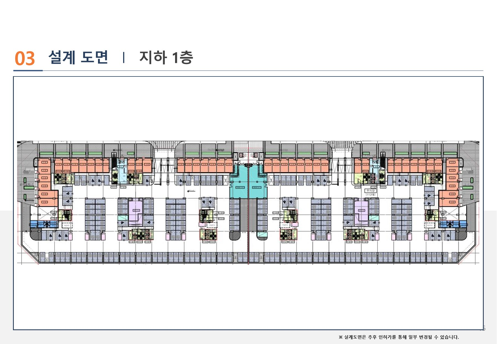
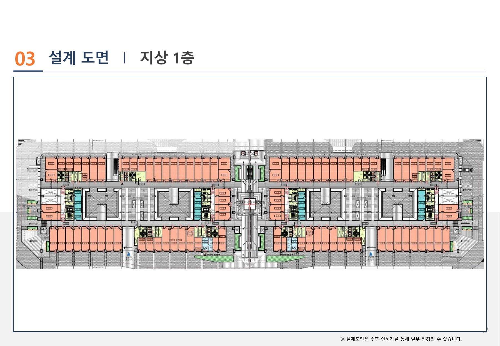
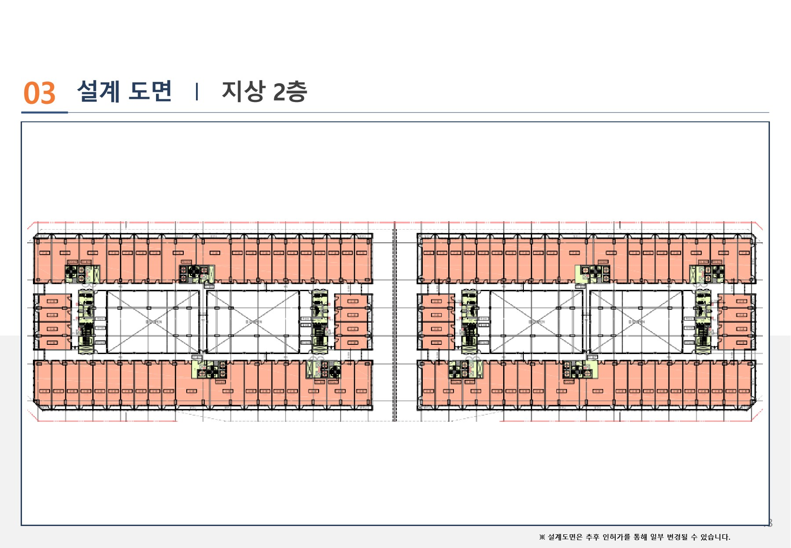
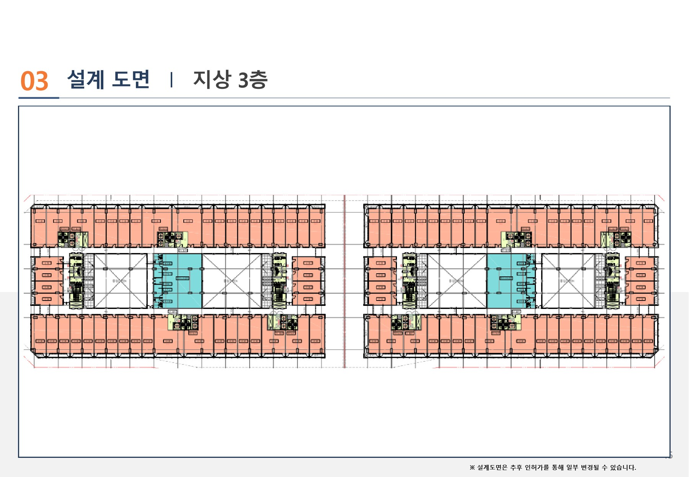
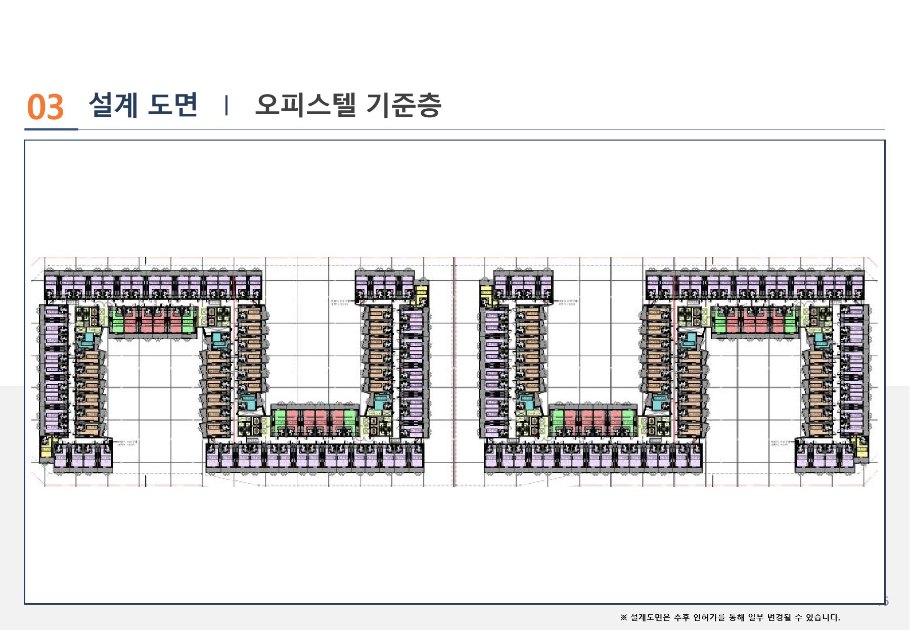

지하 1층 (B1)
지하 1층 근린생활시설 및 주차 동선 계획을 확인하는 사업계획서 기준 설계도면입니다.

사업계획서에서 발췌한 지하 1층~지상 3층 근린생활시설 층별 도면과 오피스텔 기준층 평면 자료입니다.
지하 1층 근린생활시설 및 주차 동선 계획을 확인하는 사업계획서 기준 설계도면입니다.

지상 1층 근린생활시설 구성과 주 출입 동선을 확인하는 사업계획서 기준 설계도면입니다.

지상 2층 근린생활시설 층별 구성을 확인하는 사업계획서 기준 설계도면입니다.

지상 3층 근린생활시설 층별 구성을 확인하는 사업계획서 기준 설계도면입니다.

오피스텔 기준층 객실 및 공용부 배치를 확인하는 사업계획서 기준 설계도면입니다.

※ 본 자료는 사업계획서 기준 참고자료이며, 실제 설계·인허가·분양조건·계약조건에 따라 달라질 수 있습니다.
※ 배치도, 입면도, 단면도, 세부 주차·동선 도면은 현재 확보된 사업계획서 발췌자료에 포함되어 있지 않아 게재하지 않았습니다. 확정 자료가 확보되는 대로 반영합니다.